<< back
next>>
2007 *新着情報* -news-
◆11月4(月) 吹割の滝紅葉情報
吹割の滝では紅葉が見頃を迎えています。
吹割の滝は尾瀬を源とする高さ7m、幅30mに渡って流れ落ちる豪快な滝です。
遊歩道も整備されており、吹割渓谷を約１時間で周遊でき観瀑台からのすばらしい景観もお楽しみいただけます。
●関越自動車道：沼田ICよりR120経由、日光方面へ（約30分）
●駐車場：R120沿いのお土産屋（一部有料）
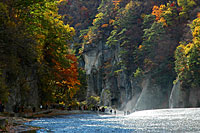
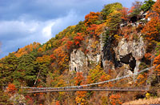
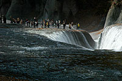
◆紅葉情報
尾瀬では朝晩が肌寒く感じるようになり、湿原も秋色に染まり始めました。
9月下旬になり草紅葉(くさもみじ)が見頃を迎えると、だんだんと周囲の山々が赤やオレンジ色に包まれまていきます。
■尾瀬沼周辺 草紅葉
0
9月下旬〜10月中旬
木々の紅葉 10月上旬〜10月中旬
■尾瀬ヶ原 草紅葉
0
9月下旬〜10月中旬
木々の紅葉 10月中旬
10月中旬になると尾瀬岩鞍高原・ノナカ周辺の紅葉が見頃迎え始めます。
おいしい秋の味覚・温泉、そして紅葉の中を走り抜けるドライブは最高ですよ。
■岩鞍高原・ノナカ周辺 10月中旬〜11月上旬
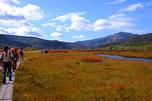
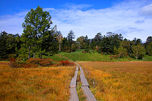
秋の尾瀬ヶ原：中田代
秋の尾瀬沼：大江湿原
◆尾瀬岩鞍高原地区盆踊り・鎌田夏祭り＆花火大会開催！
尾瀬岩鞍高原エリアや周辺エリアでは、毎年恒例の夏祭りが開催されます。
盆踊り大会、花火大会、子供も大人もご家族も一緒に楽しめます。
【尾瀬岩鞍高原地区盆踊り】
8月14日(火)〜15日(水) 片品北小学校 19:00〜21:00
片品温泉宿泊地区（土出温泉バス停）より約500m 徒歩約5分
【片品村鎌田(かまた) 笠科神社（盆踊り＆花火大会)】
8月15日(水)〜16日(木) 片品村鎌田(かまた) 笠科神社
花火大会：8月16日(水)21:00〜
R120尾瀬大橋より約300m・鎌田バスターミナル正面、寄居山温泉センター隣
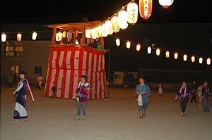
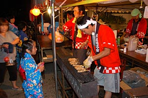
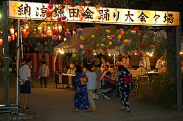
◆尾瀬岩鞍 ゆり園
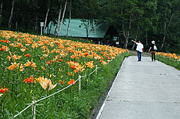
尾瀬岩鞍の広大なゲレンデに、50種類もの色とりどりのゆりが咲き乱れます。
■期間：7月14日(土)〜 8月下旬
■場所：ホワイトワールド尾瀬岩鞍
詳細は
ホワイトワールド尾瀬岩鞍HP >>
◆尾瀬のニッコウキスゲ
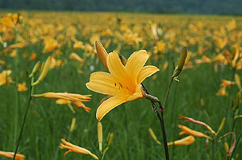
ニッコウキスゲが尾瀬ヶ原一 面に咲くのを合図に尾瀬の夏がやってきます。たくさんの可憐な花々が咲き小鳥や昆虫の姿も見られるようになります。
■平年見頃予想時期：7月中旬〜7月下旬
■アクセス：ノナカより車で鳩待峠まで約30分
ノナカより車で大清水まで約20分
◆
至仏山山開き
山の安全を祈願する神事、テープカット、記念登山などが行われます。
6月30日(土)までは至仏山登山道閉鎖のため入山できませんのでご注意ください。
■日程：7月1日 (日) 8:00〜
■場所：尾瀬 [ 鳩待峠登山口 ]
◆尾瀬の水芭蕉
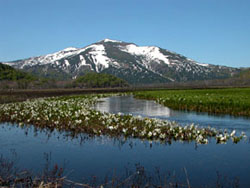
ミズバショウで名高い尾瀬は、雪解けと共に白く可憐な姿を見せます。ミズバショウが咲き始めると、尾瀬の本格的なシーズンが始まります。
■平年見頃予想時期：5月下旬〜6月中旬
■アクセス：ノナカより車で鳩待峠まで約30分
ノナカより車で大清水まで約20分
◆
至仏山登山道の残雪期の閉鎖について
残雪期における至仏山登山道は植生保護のために、下記の期間閉鎖されます。
閉鎖期間中は、至仏山への入山はできませんのでご注意ください。
■閉鎖区間：鳩待峠 〜 至仏山頂 〜 山ノ鼻
■閉鎖期間：5月11日 〜 6月30日
���※期間は積雪量などにより変わることがあります。
◆
見どころ開花情報
尾瀬岩鞍高原周辺、春の訪れと共に見頃となる水芭蕉の見頃情報をお知らせします。
■
水芭蕉の森
平年：4月下旬〜5月上旬
ライトアップ
ゴールデンウィーク中 日没〜9:00pmまで
アクセス：ノナカより車で約10分
■
大清水の水芭蕉
平年：5月上旬〜5月中旬
尾瀬の入口大清水の水芭蕉は、車椅子でも通行可能な木道を通って
ご覧になれます。 アクセス：ノナカより車で約20分
■
尾瀬の水芭蕉
平年：5月下旬〜6月中旬
水芭蕉で名高い尾瀬は、雪解けと共に白く可憐な姿を見せます。
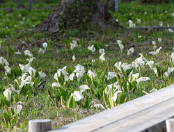
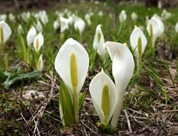
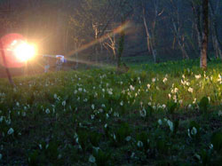
◆スキー場情報
(4/2現在)
◆丸沼高原スキー場
＜積雪190cm・ほほ全面滑走可能＞
5月6日(日)まで営業予定！
詳細は
丸沼高原スキー場 HP >>
◆ホワイトワールド尾瀬岩鞍
＜積雪100cm・ほほ全面滑走可能＞
4月8日(日)まで営業予定！
詳細は
ホワイトワールド尾瀬岩鞍 HP >>
◆かたしな高原スキー場
4月1日(日)にて営業終了
詳細は
かたしな高原スキー場 HP >>
<< back
next>>